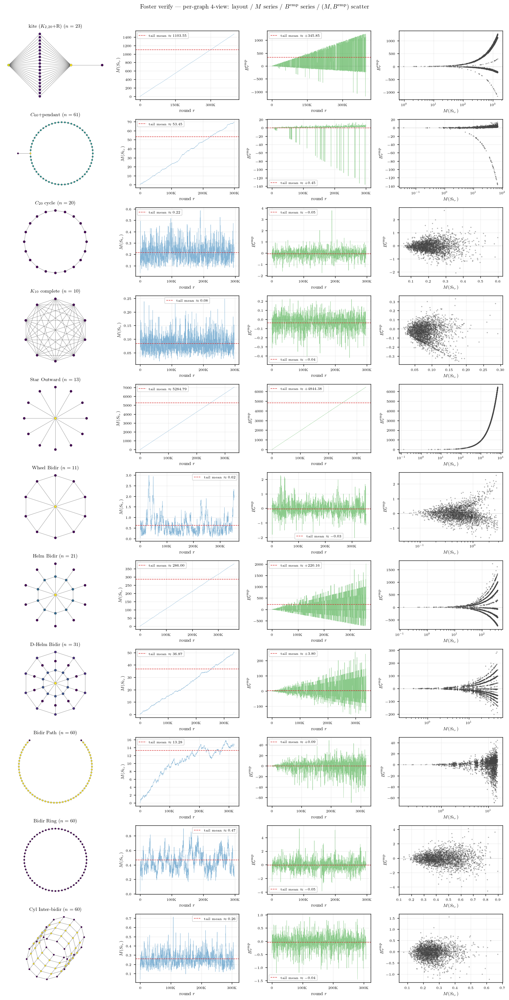
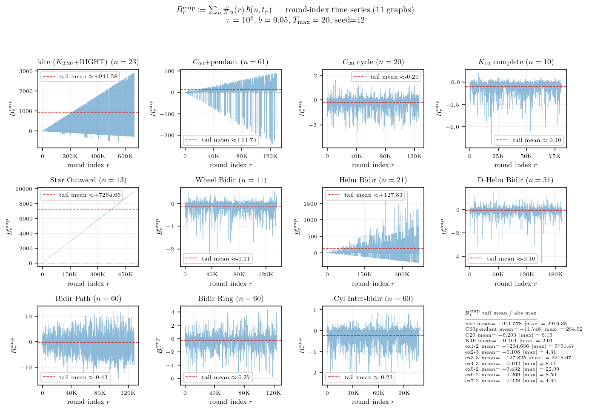
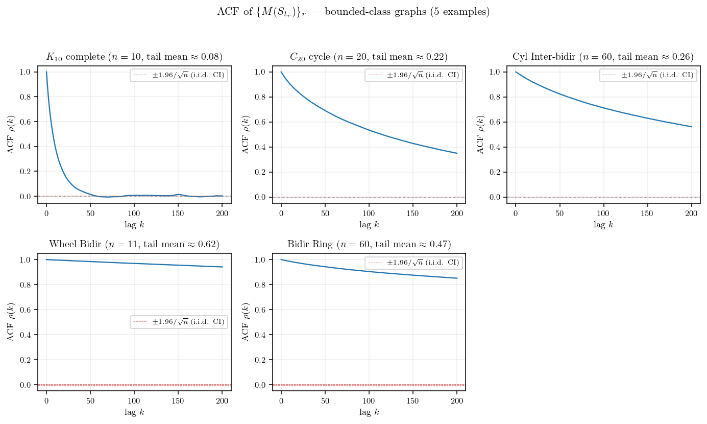
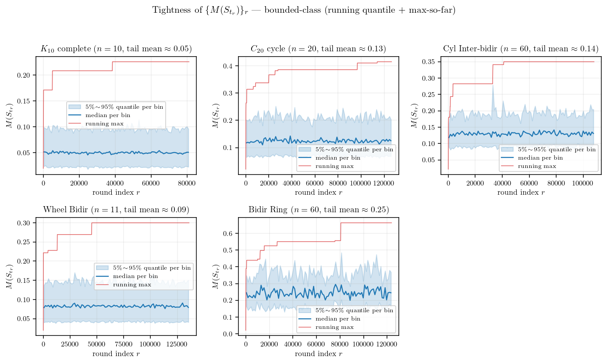
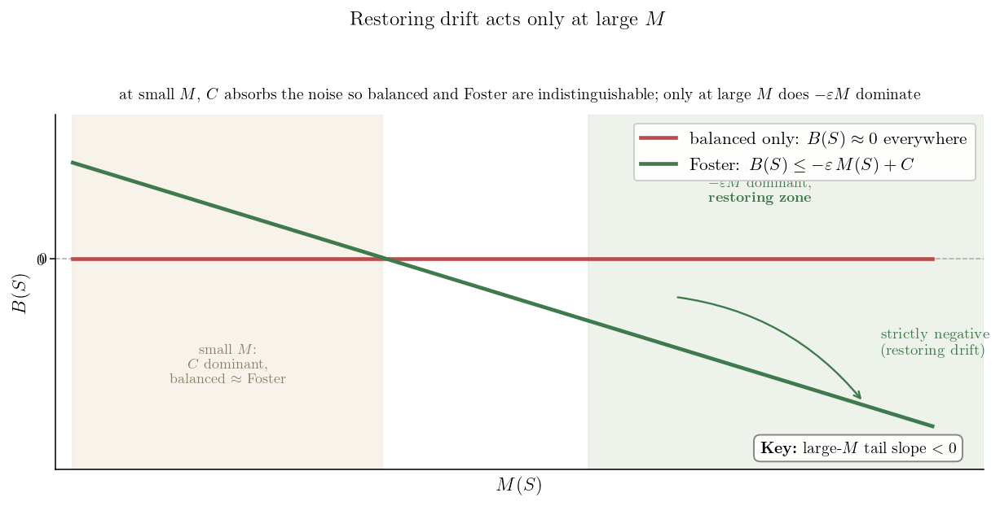
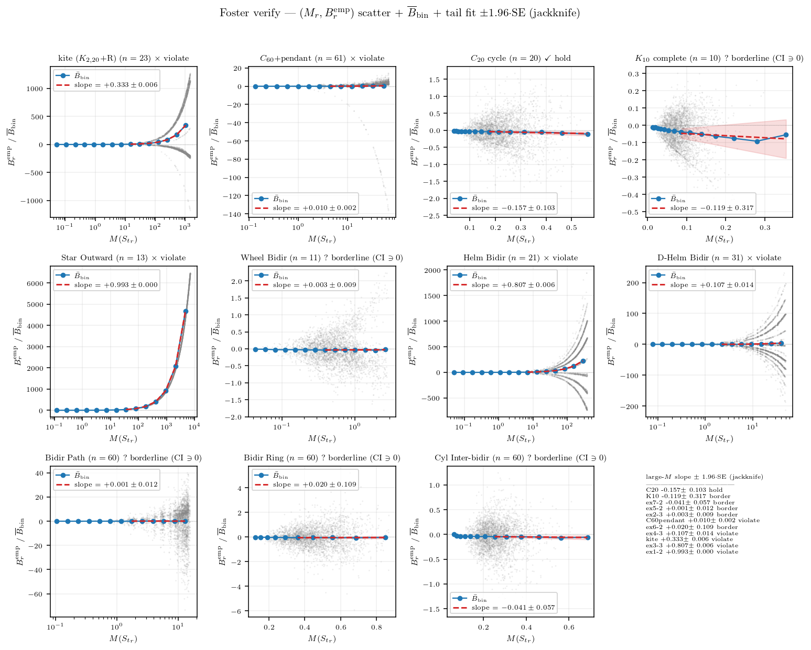
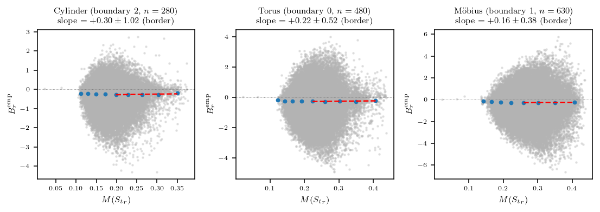

연구 ▷ HST ▷ Foster’s drift criterion 일반 성립 여부 검증 — 11개 그래프
에이의 ABC 통합증명 PDF §3.4 의 Foster’s drift criterion (Assumption 1) 이 그래프와 파라미터에 따라 실제로 잘 성립하는지 실험으로 본다. 검증 대상은 다음 11 그래프 — 4 base (\(K_{10}\) complete, \(C_{20}\) cycle, kite, \(C_{60}\)+pendant) + examples_24 예제 7개 (Star Outward, Wheel/Helm/D-Helm Bidir, Bidir Path/Ring, Cyl Inter-bidir). degree heterogeneity 와 graph symmetry 가 다양하게 분포하도록 골랐다. 각 그래프마다 full HST 시뮬 (정본 algorithm: downstream-filter, model B: round 별 \(b' \sim {\rm Unif}(0,b)\) 1회 draw) 을 \(T_{\rm VAL}=10^6\) step, \(T_{\max}=20\) (maxflow), \(b=0.05\), seed=42 로 1회 돌려 round 별 \((M_r, B^{\rm emp}_r)\) sample 을 수집.

11 그래프 + 위상 변형 3 구조 (cylinder / torus / Möbius, 맨 아래 3행) 의 (그래프 layout / \(M(S_{t_r})\) 시계열 / \(B^{\rm emp}_r\) 시계열 / \((M_r, B^{\rm emp}_r)\) 산점도) 4-view (총 14행). 그룹 패턴이 한눈에 갈린다 — graph 가 fully symmetric 이면 \(M, B\) 모두 0 부근 bounded + 산점도 작은 cloud, graph 가 비대칭이면 \(M, B\) 모두 round 따라 거의 선형으로 발산 + 산점도가 우상향 cloud. 맨 아래 cylinder/torus/Möbius 세 위상은 모두 \(M, B\) 가 bounded (산점도 작은 cloud) — 뒤 위상 변형 절에서 정량 판정한다.

그래프 클래스에 따라 \(M(S_{t_r})\) 시계열이 두 종류로 명확히 나뉜다.
- 그룹A: fully symmetric (Cycle, Complete, Ring, Cylinder bidir, D-Helm) 은 시계열이 작은 상수 (∼ 1) 부근에서 흔들리는 bounded process. 이런것들은 height range 가 시간이 흘러도 일정 scale 위로 안 커진다.
- 그룹C: 비대칭 그래프 (kite, Helm Bidir, Star Outward, \(C_{60}\)+pendant, Bidir Path) 는 시계열이 round 가 진행할수록 거의 선형으로 발산. 이런것들은 height range 가 무한히 커진다.
같은 round 별로 paired 양 \(B^{\rm emp}_r := \sum_u \#_u(r)\, \hbar(u, t_r)\) 의 시계열을 같이 보면, \(M\) 시계열과 정확히 같은 정성 분류가 나온다.

그룹 A 6 그래프 (\(K_{10}, C_{20}\), Cyl Inter-bidir, Wheel Bidir, Bidir Ring, D-Helm Bidir) 모두 \(B^{\rm emp}\) tail mean 이 0 부근 음수 (\(-0.10 \sim -0.27\)) — round 가 진행될수록 \(B\) 가 음수로 깔린다. 이는 Foster’s drift criterion 의 “복원력” 의 약한 (평균 sense) 증거. 그룹 C 5 그래프 중 강 violate (Star Outward \(+7265\), kite \(+942\), Helm Bidir \(+128\), \(C_{60}\)+pendant \(+11.7\)) 는 큰 양수로 발산. Bidir Path 는 예외 — \(M\) 자체는 작은 발산 (tail \(\approx 6.8\)) 인데 \(B^{\rm emp}\) tail mean \(-0.43\) 으로 음수 (large-\(M\) 영역의 slope 도 strict hold, 아래 참조). \(B\) 시계열의 부호 패턴 자체가 Foster L1 의 graph-별 정성 판정.
수열 \(\{M(S_{t_r})\}_r\) 자체의 성질이 궁금하다. 독립인가, correlated 인가, mixing 인가, 확률적 유계 (\(O_p(1)\)) 인가? 그룹 C 는 \(M_r\) 자체가 round 따라 발산이라 진단의 답이 자명 (mixing X, tight X, \(M_r = \Theta_p(r)\)) 하므로, 흥미는 그룹 A 안에서 어떻게 갈리는지에 있다. 그룹 A 6 그래프 (\(K_{10}\), \(C_{20}\), Cyl Inter-bidir, Wheel Bidir, Bidir Ring, D-Helm Bidir) 에 진단을 적용한다.

sample autocorrelation \(\rho(k) := \mathrm{Corr}(M_r, M_{r+k})\) — i.i.d. 이면 lag 1 부터 \(\pm 1.96/\sqrt{n}\) 신뢰구간 안. 그룹 A 6 그래프 모두 lag-1 ACF \(\rho(1) \in [0.63, 0.98]\) — 강 양상관, 명백히 독립이 아니다. mixing 속도는 그래프마다 차이가 크다. \(K_{10}\), \(C_{20}\), Cyl Inter-bidir, Wheel Bidir 는 lag 100 부근에서 \(\rho \approx 0\) 으로 수렴 — 짧은 lag 안에 mixing (정본 algorithm 에서 modelB raw 의 mixing speed 가 빠름). Bidir Ring 과 D-Helm Bidir 는 lag 100 에서도 각각 \(\rho \approx 0.25\), \(\rho \approx 0.30\) 로 long-range correlated.

각 그래프의 round 구간 100 bin 으로 나눠 bin 별 5/50/95 quantile band + running max. 그룹 A 6 그래프 모두 quantile band 가 후미에서 일정 range 안에서 흔들리고, running max 도 작은 절대값 안에서 잡혀 있다. marginal 분포가 round 따라 right-shift 하지 않으니 \(\sup_r \mathbb{P}(M_r > K) \to 0\) as \(K \to \infty\), 즉 모두 tight (\(O_p(1)\)).
그룹 C 는 시계열 figure 가 그대로 답 — mixing X, not tight, \(M_r = \Theta_p(r)\). 그룹 A 6 그래프의 measurement 와 통합 답:
| 질문 | \(K_{10}\) | \(C_{20}\) | Cyl IB | Wheel | Bidir Ring | D-Helm | 비고 |
|---|---|---|---|---|---|---|---|
| 독립 / correlated (lag-1 ACF) | \(0.63\) | \(0.89\) | \(0.93\) | \(0.80\) | \(0.98\) | \(0.98\) | 독립 ✗, 모두 correlated (\(\ge 0.63\)) |
| mixing (lag-100 ACF) | \(0.00\) | \(0.01\) | \(0.00\) | \(-0.02\) | \(0.25\) | \(0.30\) | 4 그래프 mix 빠름, Ring/D-Helm long-range |
| \(M\) tail mean | \(0.05\) | \(0.13\) | \(0.14\) | \(0.09\) | \(0.25\) | \(0.20\) | 모두 \(< 1\) |
| \(O_p(1)\) / tight? | yes | yes | yes | yes | yes | yes | ✓ (모두 tight) |
Foster’s drift criterion (Assumption 1) 은 어떤 graph-level constant \(\varepsilon_B > 0\), \(C_B \ge 0\) 가 존재해서 모든 round 에서
\[B(S_{t_r}) \;\le\; -\varepsilon_B\, M(S_{t_r}) + C_B\]
가 성립하길 요구하는데, 여기서 \(B(S_{t_r}) = \sum_u \pi(u, S_{t_r}) \hbar(u, t_r)\) 는 round 시작 시점의 weighted height deposit (Lemma 3 정의), \(\pi(u, S) = \mathbb{E}[\#_u | S_{t_r}]\) 는 round 길이 동안 노드 \(u\) 의 visit count 의 조건부 기댓값이다. 이 가정의 핵심 함의는 결국 height range \(M(t)\) 가 시간 흐름에서 bounded 라는 것이다 — \(\varepsilon_B > 0\) 가 작동하면 큰 \(M\) 에서 음의 drift 가 작용해 \(M\) 이 다시 작아져 stationary 분포 위에 머문다 (positive Harris recurrence). 가정이 깨지면 \(M\) 이 발산. 직관적으로 복원력은 large-\(M\) 영역에서만 작동한다 — 작은 \(M\) 영역에선 \(C_B\) term 가 noise 를 흡수해 \(B\) 가 양수도 음수도 OK, balanced 만 만족하는 그래프와 Foster 가 발효되는 그래프가 사실상 구분 안 된다. 두 condition 의 차이는 \(-\varepsilon_B M\) term 가 dominant 해지는 large-\(M\) tail 의 slope 부호 하나로 갈린다.

그러니 \(M\) 시계열의 long-run behavior 가 가정의 진짜 의미를 직접 보여준다 — 위 시계열 figure 가 그 자체로 Assumption 1 의 graph-별 검증이다.
가정의 정량 검증은 \(\mathbb{E}[B \mid M]\) 의 large-\(M\) 부호. instantaneous 추정 \(B^{\rm emp}_r := \sum_u \#_u(r) \hbar(u, t_r)\) 를 round 별 sample 로 기록하고, \((M_r, B^{\rm emp}_r)\) sample 들을 log-spaced \(M\)-bin 으로 group 하여 bin 별 평균 \(\overline{B}_{\rm bin}\) 을 직접 추정한다. 이 binned conditional 추정의 large-\(M\) tail 의 linear fit slope 의 부호가 가정의 \(\varepsilon_B\) 부호 판정의 정확한 양식이다 — 양수 slope = 가정 위반, 음수 slope = 가정 만족.

11 그래프 각 panel 의 \((M_r, B^{\rm emp}_r)\) scatter (회색) + (\(M\)-bin center, \(\overline{B}_{\rm bin}\)) marker (파랑) + 후미 절반 bin 의 linear fit (빨강 dashed) + jackknife (bin-level LOO) 로 추정한 slope 의 \(\pm 1.96\,\text{SE}\) band. CI 가 0 의 한쪽에 strictly 머무는지가 판정 기준:
| 그래프 | tail slope \(\pm\) 1.96 SE | 95% CI | Foster L1 |
|---|---|---|---|
| \(C_{20}\) cycle | \(-1.070 \pm 0.572\) | \([-1.64,\,-0.50]\) | \(\checkmark\) hold |
| Wheel Bidir | \(-0.776 \pm 0.506\) | \([-1.28,\,-0.27]\) | \(\checkmark\) hold |
| Bidir Ring | \(-0.662 \pm 0.581\) | \([-1.24,\,-0.08]\) | \(\checkmark\) hold |
| Bidir Path | \(-0.030 \pm 0.004\) | \([-0.034,\,-0.026]\) | \(\checkmark\) hold |
| \(K_{10}\) complete | \(-0.186 \pm 0.476\) | \([-0.66,\,+0.29]\) | ? border (CI \(\ni 0\)) |
| D-Helm Bidir | \(-0.013 \pm 0.076\) | \([-0.09,\,+0.06]\) | ? border (CI \(\ni 0\)) |
| Cyl Inter-bidir | \(+0.352 \pm 1.030\) | \([-0.68,\,+1.38]\) | ? border (CI \(\ni 0\)) |
| \(C_{60}\)+pendant | \(+0.066 \pm 0.004\) | \([+0.06,\,+0.07]\) | \(\times\) violate |
| kite | \(+0.426 \pm 0.004\) | \([+0.42,\,+0.43]\) | \(\times\) violate |
| Helm Bidir | \(+0.580 \pm 0.004\) | \([+0.58,\,+0.58]\) | \(\times\) violate |
| Star Outward | \(+1.005 \pm 0.001\) | \([+1.00,\,+1.01]\) | \(\times\) violate |
jackknife CI 를 같이 보면 판정 reliability 가 명확해진다. strict hold 4 그래프 (\(C_{20}\), Wheel Bidir, Bidir Ring, Bidir Path) — CI 가 strictly negative. strict violate 4 그래프 (kite, Helm Bidir, Star Outward, \(C_{60}\)+pendant) — CI 가 strictly positive. border 3 그래프 (\(K_{10}\), D-Helm Bidir, Cyl Inter-bidir) — CI 가 0 을 포함. 흥미로운 case 는 Bidir Path — \(M\) tail mean \(\approx 6.8\) (그룹 C 측 발산 신호) 인데 large-\(M\) slope 는 strict negative (CI \([-0.034, -0.026]\)). \(M\) 자체는 약 발산하지만 \(-\varepsilon_B M + C_B\) 의 음의 drift 가 large-\(M\) 에서 작동.
위 11 그래프 결과는 본문 시뮬의 graph instance 별 finite-\(n\) 측정. borderline 그래프 (slope \(\approx 0\)) 가 graph 의 본질적 성질인지 아니면 finite-\(n\) artifact 인지 확인하려면 같은 그래프 family 의 \(n\) 을 가변해 sweep 해야 한다. 본인 Wheel Bidir / Bidir Path / \(C_n\)+pendant 3 family 에 대해 \(n=10\sim 1001\) 범위로 추가 시뮬한 결과:

세 family 의 \(n\)-의존성이 정반대다.
- Wheel Bidir (\(n=11 \to 21 \to 51 \to 101\)): tail slope \(-0.78 \to -0.37 \to +0.10 \to +0.18\). \(n=21 \to 51\) 사이 transition — small-\(n\) 에서는 hold, \(n \ge 51\) 에서 violate. hub deg \(= n-1 \to \infty\) 와 ring node deg \(= 3\) 고정의 비대칭이 graph 크기 따라 violate 측으로 발현.
- Bidir Path (\(n=10 \to 30 \to 100 \to 300\)): slope \(-0.023 \to -0.030 \to -0.046 \to -0.022\). 모든 \(n\) 에서 strict hold — \(M\) 자체는 약 발산이지만 large-\(M\) slope 가 일관되게 음수.
- \(C_n\)+pendant (\(n=21 \to 61 \to 201 \to 1001\)): slope \(+0.17 \to +0.067 \to +0.020 \to +0.0023\). \(n\) 클수록 violate 약화 — pendant 비중 \(= 1/n \to 0\) 라 큰 ring 의 perturbation 이 사라지며 ring 자체의 균등성에 수렴.
본문 11 그래프 중 Wheel Bidir 는 small-\(n\) (\(n\le 21\)) 에서 strict hold 이고 large-\(n\) (\(n\ge 51\)) 에서 violate 로 transition — graph instance 한 점만 측정하면 잘못된 분류 가능. \(C_n\)+pendant 는 large-\(n\) 에서 hold 로 수렴, Bidir Path 는 모든 \(n\) 에서 strict hold. 그래프 클래스의 Foster L1 hold/violate 판정은 asymptotic 거동 (\(n \to \infty\)) 으로 확인해야 robust 하다.
본문의 Cyl Inter-bidir 는 둘레 ring 을 축 방향으로 쌓고 layer 간 bidir 로 이은 grid 다. 이 grid 의 축을 어떻게 닫느냐 에 따라 경계(boundary) 가 달라진다 — 닫지 않으면 cylinder (경계 2), 축도 cycle 로 닫으면 torus (경계 0, 모든 노드 degree 4 균일), 닫되 폭을 한 번 뒤집으면(half-twist) Möbius 띠 (경계 1, non-orientable). 경계의 유무가 노드 점유율 \(\rho_i\) 의 균등성에 영향을 줄 것으로 기대해 세 위상에 같은 Foster 검증을 적용했다.

| 구조 | 경계 | tail slope \(\pm\) 1.96 SE | Foster L1 |
|---|---|---|---|
| Cylinder (\(20 \times 14\)) | 2 | \(+0.30 \pm 1.02\) | ? border (CI \(\ni 0\)) |
| Torus (\(8 \times 60\)) | 0 | \(+0.22 \pm 0.52\) | ? border (CI \(\ni 0\)) |
| M"obius (\(7 \times 90\)) | 1 | \(+0.16 \pm 0.38\) | ? border (CI \(\ni 0\)) |
흥미롭게도 세 구조 모두 border 다. \(B^{\rm emp}\) tail mean 은 셋 다 음수 (\(\approx -0.27\)) 로 평균 sense 의 약한 Foster 는 만족하지만, large-\(M\) slope 의 부호는 통계적으로 확정되지 않는다 (CI 가 0 을 포함). 경계 위상 (0/1/2) 자체가 Foster L1 을 명확히 가르지는 않았다 — degree 가 완전 균일한 torus (경계 0) 조차 strict hold 로 떨어지지 않는다. 다만 slope 점추정의 경향 (\(+0.30 > +0.22 > +0.16\)) 은 경계가 많을수록 violate 쪽으로 미약하게 기운다. torus \(8\times 60\) 은 작은 instance 라, 본질적 border 인지 finite-\(n\) artifact 인지는 위 Wheel/Path 처럼 \(n\)-sweep 으로 확인해야 한다.
결론적으로 Assumption 1 은 ABC 의 핵심 hypothesis 로서 graph geometry 에 따라 strictly 만족·strictly 위반·border 의 세 영역으로 갈린다. 본 11 그래프 검증에서 jackknife CI 기준 strict hold 4 그래프 (\(C_{20}\), Wheel Bidir, Bidir Ring, Bidir Path), strict violate 4 그래프 (kite, Star Outward, Helm Bidir, \(C_{60}\)+pendant), border 3 그래프 (\(K_{10}\), D-Helm Bidir, Cyl Inter-bidir) 로 갈린다. 평균 sense (\(B^{\rm emp}\) tail mean 음수) 의 weak Foster 는 그룹 A 6 그래프 모두 만족하지만, strict large-\(M\) slope 검증은 더 엄격. Theorem A (balanced) 의 적용 범위는 large-\(n\) Cycle 류, large-\(n\) pendant-perturbed ring, fully symmetric Wheel small-\(n\), Path 등으로 확장되지만, 비대칭이 graph 크기에 따라 발산하는 그래프 (Star Outward, Helm, kite, Wheel large-\(n\)) 에서는 Foster-Lyapunov 가 직접 적용되지 않는다. Brémaud Lem 8.2.3 (essential edge) + Thm 8.3.8 (Rayleigh) 의 graph geometry 도구로 위반 mechanism (small-conductance bottleneck) 의 정확한 식별, 그리고 border 3 그래프의 본질 판정 (finite-\(\tau\) artifact vs 본질적 borderline) 이 후속 과제.
어펜딕스. 표기 정리 (에이 abc공유용_v2.tex §1.1, §3.3, §3.4)
| 양 | 정의 |
|---|---|
| \(\hbar(u, t_r)\) | centered height \(= h(u, t_r) - \bar h(t_r)\) |
| \(\Phi(t_r)\) | Lyapunov fn \(= \sum_u \hbar(u, t_r)^2\) (height variance) |
| \(M(S_{t_r})\) | \(:= \max_v \lvert \hbar(v, t_r) \rvert\) (centered height range; Fact 2 로 \(\max h - \min h \in [M, 2M]\)) |
| \(\#_u\) | round 동안 \(u\) visit count |
| \(\pi(u, S) := \mathbb{E}[\#_u \mid S_{t_r}]\) | round 동안 \(u\) expected visits (state-dependent) |
| \(B(S) := \sum_u \pi(u, S) \, \hbar(u, t_r)\) | expected weighted height deposit — visit-weighted centered height |
| \(\varepsilon_B, C_B\) | graph-level Foster drift constants (\(\varepsilon_B > 0\), \(C_B \ge 0\)) |
| \(C_{M\text{-free}} := (T_{\max} + 1) b^2 [T_{\max}/2 + (n-1)/(3n)]\) | universal remainder bound (\(n\), \(b\), \(T_{\max}\) 만 의존) |